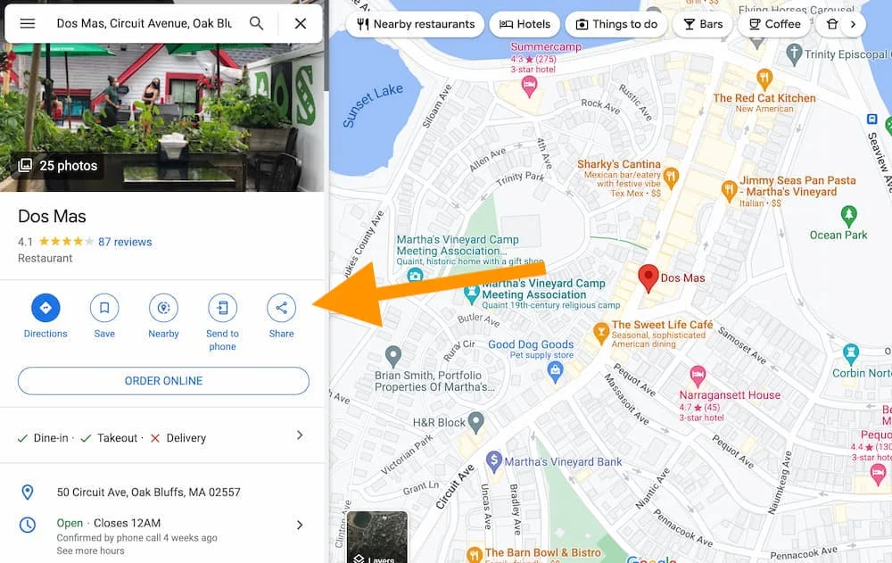
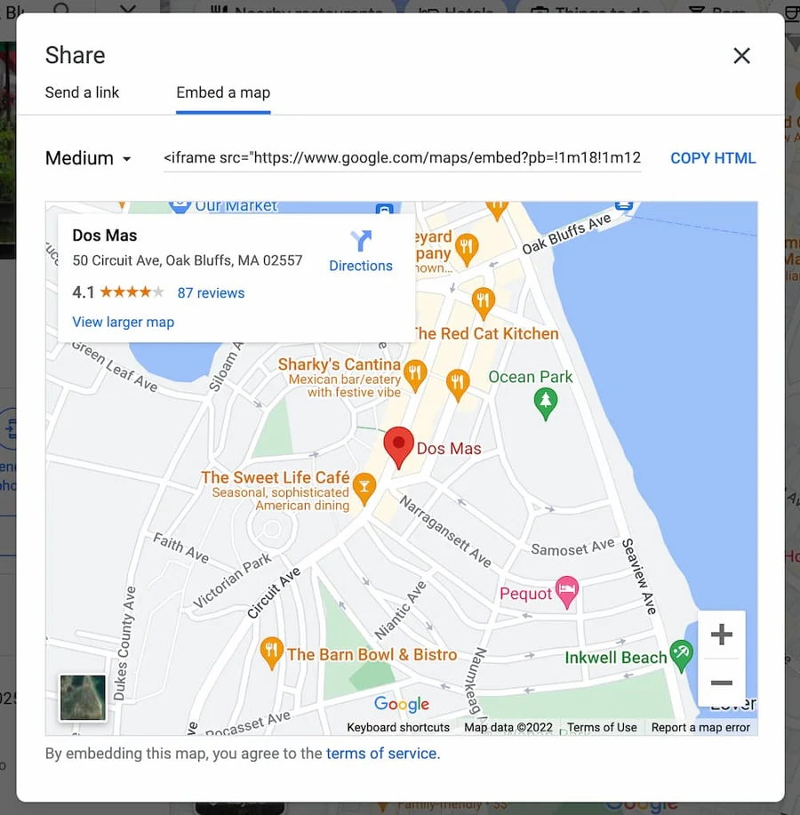

Note: This map embed option is only available from desktop version of
google maps. (Google only provides the embed option from desktop. Not
from mobile app.)
- Go to the Google Maps website.
- Search for the location you want to feature in your embedded map.
-
Click Share. Alternatively, you can click the three horizontal lines in
the top left corner and choose Share or embed map from the menu that
appears.

-
Click Embed a map to see a preview of the embed. Here, you can toggle
the map area, zoom, type (street map or satellite map), and size.

- Click Copy HTML.
- In the form, paste the copied HTML.